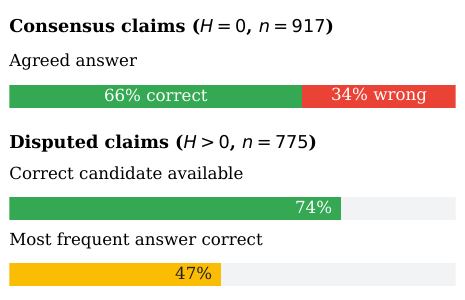
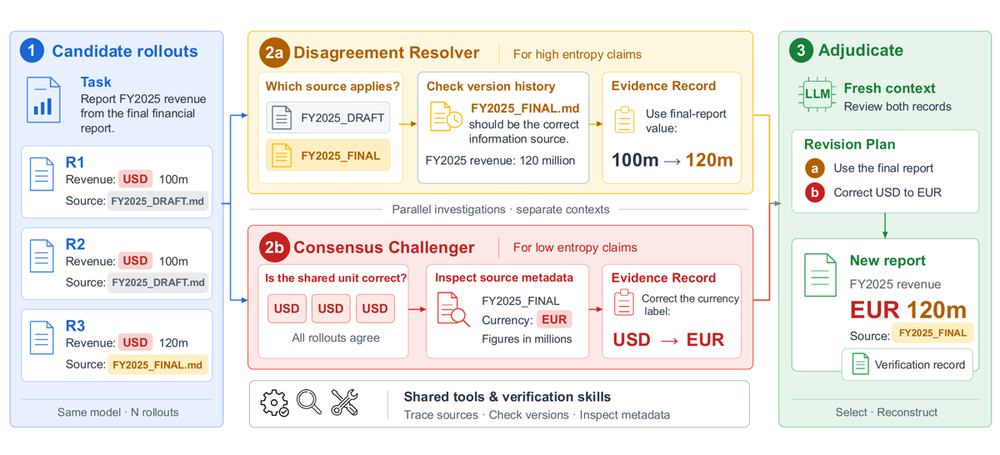
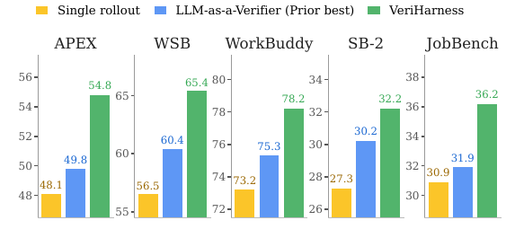

code https://github.com/google-research/veriharness + pool de rollouts https://huggingface.co/datasets/caiqizh/veriharness (le contenu des benchmarks n'est PAS redistribué) [App. E]
evidence
4
evidence_manquant
[coherence, eval]
traction
non mesuré (preprint du 2026-10-01, absent de traction.json ; pas de `comment`/`journal_ref` arXiv)
TL;DR : à modèle gelé et sans réponse de référence ni rubrique au test, on transforme le modèle du générateur en vérifieur agentique (workspace, outils d'évidence, skills) qui (a) tranche les claims sur lesquels N=10 rollouts divergent et (b) attaque les claims sur lesquels ils s'accordent, puis sélectionne et révise l'artefact livré.
Claim principal précis : sur 5 benchmarks workspace × 2 modèles frontier, VeriHarness (select) domine toutes les baselines de sélection dans les 10 cellules modèle×benchmark, et la révision adossée à l'évidence porte le gain moyen sur un rollout unique à +6.2 pts (Flash, 47.2 → 53.4) et +6.4 pts (Opus, 49.6 → 56.1) [Tab. 2]. Claim secondaire : les skills de vérification s'auto-améliorent depuis le feedback d'échec sur un dev set (évoluées depuis vide > librairie humaine ; évoluées depuis la librairie humaine = meilleur score final, +6.8 APEX / +3.7 SB-2 sur la librairie humaine) [§5, Fig. 3].
⚠️ Papier test-time, training-free : aucun RL, aucun gradient, aucun reward scalaire (limitation revendiquée). Son intérêt pour la revue est ailleurs : c'est le design de vérifieur le plus abouti du corpus pour des livrables longs sans vérité exacte, et les auteurs disent explicitement en conclusion que le verification record « provides a claim-level signal that could supervise the generator » — piste non testée ici.
Pipeline de construction du « data » propre au papier = le pool de rollouts : pour chaque benchmark × modèle, le générateur tourne dans le scaffold natif du benchmark (APEX-Agents agent runner + ses tool servers ; opencode pour JobBench ; l'agent SpreadsheetBench 2 ; Claude Code pour WorkBuddy et WSB) et produit N=10 rollouts/tâche. Chaque rollout = artefact livré + état final du workspace + trace. Pools gelés avant vérification → toutes les méthodes reçoivent les mêmes candidats [§4.1, App. D].
Volume : N=10 rollouts par tâche et par modèle. Abstract annonce « approximately 26,000 rollouts » ; Tab. 1 donne 1 166 tâches → 1 166 × 10 × 2 = 23 320 (voir §7.0).
Distribution de difficulté : pas de courbe de difficulté ; proxy utilisé = claim entropy du pool (Eq. 1). Sur APEX/Opus : 154 pools consensus (H=0) et 262 pools disputés [§6]. Analyse claim-level sur 434 tâches / 1 692 claims → 917 consensus, 775 disputés [App. A].
Filtrage par pass@k du modèle de base : non. Aucun filtrage de tâches. Le seul filtrage est en aval, au niveau des skills candidates pendant l'auto-évolution (rejet automatique des candidates contenant identifiants de tâche, noms de benchmark, noms de fichiers du dev set, valeurs de réponse de référence) [App. I].
Curriculum : aucun pour les tâches. Pour les skills : 10 rounds (condition C) / 8 rounds (condition D), schedules fixés avant toute inspection des trajectoires held-out [App. I].
Contamination / séparation train-test : pas de test de contamination des benchmarks (non précisé). Pour l'auto-évolution, split unique ~75/25 dev/held-out par benchmark, graine fixe, les 10 rollouts d'une tâche restent dans la même partition, et les tâches partageant un workspace source, des documents sources ou un template de workbook sont groupées avant le split → bonne hygiène [App. I]. Les grades held-out ne sont jamais renvoyés au proposer ni utilisés pour changer prompts, skills, K ou stopping [App. I].
Données SFT/IFT avant RL : sans objet (aucun entraînement).
Coût humain : 18 skills écrites à la main [Tab. 7], « written from general document-handling knowledge and development failures only, then frozen », les auteurs n'inspectent ni artefacts ni traces ni grades held-out [App. I]. Qui les a écrites, combien d'heures, quel niveau d'expertise métier : non précisé. Autre coût humain : comparaison manuelle des 95 checks des 4 librairies évoluées contre la librairie humaine [§6] — nombre d'annotateurs et protocole non précisés. Coût de génération du pool annoncé « over $100,000 » (abstract) sans décomposition.
2. Environnement / harness
C'est le cœur du papier. Formalisation : Verifier = (M, H_V) avec H_V = (W, T, Π, S) — workspace, outils d'évidence, protocole, librairie de skills (Eq. 3) [§3.1].
Observation : le workspace expose en fichiers (i) la description de tâche s, (ii) l'environnement E (fichiers sources, données, état applicatif), (iii) pour chacun des N rollouts : l'artefact d_i, l'état final du workspace w_i, la trace τ_i [§3.1, App. D]. Les tableurs sont rendus en texte cellule-par-cellule pour permettre la comparaison [App. D]. Le vérifieur ne voit jamais le grader, la rubrique, ni la réponse de référence [§2, §4.1].
Espace d'actions / outils : outils natifs d'agent, recopiés [App. H] : read, ls, find, grep (workspace + rollouts), bash (exécuter du code, y compris les scripts embarqués dans une skill), write et editrestreints au répertoire de sortie. Pas de signature formelle fournie. Les scripts livrés par les skills sont nommés dans Tab. 7 : xlsx_dump, xlsx_diff, xlsx_gaps, xlsx_forks, xlsx_render, xlsx_recalc, pdf_render, pdf_tables, pdf_words, docx_changes, docx_text, pptx_render, pptx_text, bundle_inventory, patchlab, pageprobe.
Skills (18, 4 familles) [§3.1, App. H, Tab. 7] : 6 evidence (xlsx, pdf, docx, pptx, bundle, patch — comment lire un livrable comme preuve et pas comme texte extrait, + scripts) ; 4 resolver (answer, bundle, workbook, patch — ce qui fait preuve décisive et dans quel ordre d'autorité ; ex. workbook : cellules de note d'input → labels → formules sœurs → mots de la tâche) ; 3 challenger (falsify-answer / -bundle / -workbook — les façons dont tout un pool se trompe ensemble, un check par entrée ; ex. falsify-answer : documents fournis jamais ouverts, clauses gouvernantes non citées, statistiques sur le mauvais ensemble) ; 5 revision (repair-prose / -bundle / -record / -xlsx / -patch — comment le type est noté, comment clore un claim non résolu, ce qu'il ne faut jamais éditer). ⚠️ §3.1 annonce les skills « listed in full » en App. H : Tab. 7 n'en donne qu'un résumé d'une ligne — le texte réel est dans le repo, pas dans le papier.
Protocole Π (Alg. 1, App. C) : le programme ouvre deux contextes concurrents qui ne se voient pas ; le modèle choisit quoi vérifier et quand s'arrêter.
1. Disagreement resolver : localise un claim disputé p et ses candidats V_p, remonte aux sources/calculs, choisit le check à grande expected information gain (Eq. 4, jugée qualitativement, jamais calculée), élimine les candidats contredits (Eq. 5), enregistre dans L_≠. Si l'évidence contredit tous les candidats, il n'inscrit une valeur neuve que si l'évidence l'établit ; sinon le claim reste ouvert [§3.2].
2. Consensus challenger : identifie les claims unanimes, propose comment ils pourraient être faux, teste par priorité P(le check expose une faute) (Eq. 6, qualitative). Trois cibles : valeurs consensuelles (recalcul depuis les inputs bruts, labels vs métadonnées source), lectures consensuelles (interprétation vs fichier nommé / période annoncée / définition du workbook), omissions consensuelles (exigences de s que tous les rollouts ont ratées) → enregistre dans L_= [§3.3].
3. Adjudication : contexte frais du même modèle sur (L_≠, L_=, t, R), sans hériter des historiques → (base, revision_plan, unresolved) (Eq. 7). base ∈ R ∪ {∅} ; choisit la base « with the fewest evidence-supported defects on the task's substantive requirements » [§3.4].
4. Delivery : plan vide → base inchangée ; plan non vide → application des changements ; base=∅ → reconstruction depuis inputs + évidence. Les claims unresolved restent marqués ; pour une interprétation non tranchée, la livraison présente les deux lectures quand le format le permet (celle de la base en premier), sinon celle que préfère l'adjudication [§3.4, App. C].
Single/multi-turn, horizon : multi-turn, investigation libre, critère d'arrêt décidé par le modèle (« stops when it judges that further checks are unlikely to change the outcome ») — pas de budget de tours ni de cap de tokens rapporté : non précisé. Gestion du contexte long = séparation en 3 contextes + passage des records en fichiers entre contextes [App. G].
Exécution : runtime maison = couche mince sur l'agent de code open-source pi (MIT), Claude servi via proxy LiteLLM local. Rollouts, inputs et environnement montés read-only dans un sandbox sans réseau ; seul le répertoire de sortie est writable ; scripts de skills sous limite de 10 minutes (dans la boucle d'évolution) [App. D, App. I]. Déterminisme, reset, timeouts d'outils : non précisé (sauf la limite 10 min).
Portabilité : le même Π + S injectés comme texte d'instruction dans Gemini CLI 0.46.0, Claude Code 2.1.246, Codex 0.149.1, avec les outils et sandbox de chaque CLI [App. D, App. G]. Justification du runtime dédié : c'est le programme qui exécute le protocole (deux contextes séparés, passage des records, livraison) ; dans un CLI cela dépend de la boucle hôte [App. G].
Gestion des erreurs d'outils / sorties mal formées : non précisé (aucune mention de retry, de parsing d'échec, de garde-fou de format).
Exemple de trajectoire (recopié de Fig. 1 / §3, exemple filé) : tâche « reporter le CA FY2025 depuis le rapport financier final ». (1) R1, R2 citent FY2025_DRAFT.md → 100m ; R3 cite FY2025_FINAL.md → 120m ; les trois libellent USD. (2a) Le resolver vérifie l'historique de versions → le rapport final prime → 120m. (2b) Dans un contexte séparé, le challenger inspecte les métadonnées source → la devise est EUR alors que tous les rollouts disent USD. (3) L'adjudication combine : plan de révision (a) utiliser le rapport final, (b) corriger USD → EUR → nouveau rapport « EUR 120m » + verification record.
3. Reward / vérifieur
⚠️ Distinguer deux objets : le vérifieur étudié (VeriHarness, sans vérité terrain) et le grader d'évaluation (celui des benchmarks, jamais accessible au vérifieur).
Type (VeriHarness) : hybride agentique sans score. Pas d'exact match, pas de reward model, pas de note scalaire : sortie = (artefact livré, verification record). Le record lie claim → check → évidence → verdict, plus la liste des claims non résolus [§3.4]. Granularité claim-level, verdicts ternaires de fait (tenu / réfuté / non résolu). Limitation revendiquée : « The harness delivers an artifact and a verification record, and it does not assign a scalar score to each rollout… Turning these judgments into a calibrated rollout-level score, for example as a reward signal, is left to future work » [Limitations].
Termes additionnels (format, longueur, pénalités) : aucun — il n'y a pas de fonction de reward.
Type (graders d'évaluation) [App. D] : APEX-Agents et JobBench = LLM judge par item de rubrique, juge = Gemini 3 Flash ; Workspace-Bench Lite = agent-as-a-judge, agent Claude Code sous Claude Opus 4.8 ; WorkBuddy = vérifieur composite (tests + règles en code ; règles + LLM judge Gemini 3.5 Flash en office ; pipeline du benchmark en web) ; SpreadsheetBench 2 = recalcul du workbook et comparaison cellule à cellule (programmatique). Contrôle de la dérive du juge : base et artefact livré notés dans le même round, score rapporté = score de base archivé + différence intra-round [App. D]. ⚠️ Non traité : le juge WSB est Opus 4.8, le même modèle que l'un des générateurs/vérifieurs (self-preference), et le juge APEX est Gemini 3 Flash face à un générateur Gemini 3.5 Flash. Aucun contrôle d'auto-préférence rapporté.
Fiabilité du vérifieur : mesurée seulement partiellement, jamais contre des humains.
Mesure indirecte principale = le gain de score sous les graders des benchmarks (Tab. 2). C'est un proxy de bout en bout, pas une précision de verdicts.
Mesure directe, une seule, un seul benchmark, un seul modèle [§6, App. J, Tab. 6] : sur APEX/Opus, les lignes du record du challenger portant sur des claims unanimes sont appariées aux items de rubrique par le même modèle (Opus lisant record + rubrique), puis confrontées aux grades archivés. Résultat : le challenger n'a jamais réfuté un claim que tous les rollouts avaient juste → faux positifs = 0 sur ce sous-ensemble. Les faux négatifs (erreurs unanimes laissées debout) sont classés : 70 % « le claim testé est un input/intermédiaire correct, l'erreur est en aval », 14 % « même quantité, définition/période/version de source différente », 12 % « le challenger a confirmé la mauvaise valeur », 4 % omission ou bruit d'appariement.
⚠️ Ce que cette mesure ne donne pas : aucun dénominateur (combien d'erreurs unanimes au total), aucun taux de FP/FN global, rien sur le resolver, rien sur l'adjudication, rien sur les 4 autres benchmarks, rien sur Flash. L'appariement record↔rubrique est fait par un LLM sans validation humaine. L'extraction claim-level de App. A (Opus à température 0 lisant 10 réponses) n'est elle non plus validée par aucun humain. Aucun accord inter-annotateur, aucune mesure d'accord humain nulle part dans le papier.
Si juge LLM : prompts et rubriques — non recopiés. Ni les prompts du resolver/challenger/adjudication, ni le texte des 18 skills, ni les prompts des graders ne figurent dans les annexes (Tab. 7 ≠ texte des skills). Renvoi implicite au repo.
Robustesse / attaque : le vérifieur n'a jamais été attaqué. Aucun red-teaming, aucune solution dégénérée testée, aucune injection de prompt dans les rollouts ou les fichiers sources (pourtant le vérifieur lit les traces et artefacts produits par un agent, surface d'injection évidente), aucun test de ce que fait le harness face à un pool de 10 rollouts délibérément mauvais. Le seul garde-fou anti-dérive est conceptuel : write/edit confinés au répertoire de sortie et skills repair- qui spécifient « what must never be edited » [Tab. 7]. ⚠️ Risque structurel non testé : sur 3 des 5 benchmarks le grader est un juge LLM, et VeriHarness réécrit l'artefact noté en y ajoutant un verification record et, pour les claims non résolus, les deux lectures — exactement le genre d'édition qui peut gonfler une couverture de rubrique sans améliorer la correction. Contre-argument fort que le papier ne formule pas mais que ses chiffres soutiennent : les gains tiennent aussi sur SpreadsheetBench 2 (grader programmatique, +4.9 Flash / +4.2 Opus) et sur le domaine code de WorkBuddy (tests), donc une partie du gain est non-gamable.
4. Optimisation
Algorithme : aucun. Training-free, modèles gelés, pas de gradient, pas de GRPO/PPO/DPO, pas de reward scalaire. La seule « optimisation » est une recherche discrète sur la librairie de skills [§5, App. I] :
split dev/held-out ~3:1 par benchmark, graine fixe, groupement par workspace/template avant split ;
chaque round, le proposer (Opus 4.8) lit des failure packages (tâche + workspace, pool de rollouts figé, records d'évidence et plan de révision du harness, artefact livré, verdicts per-item du grader) et génère K librairies candidates (K=3 au début, K=5 ensuite), scripts autorisés sous limite 10 min ;
filtre automatique rejetant identifiants de tâche / noms de benchmark / filenames dev / valeurs de référence ;
règle de sélection : la candidate au plus grand gain apparié non négatif sur le dev set remplace la librairie courante ; si toutes les candidates ont un gain négatif, la librairie est conservée ; le score held-out est enregistré après la décision, donc une mise à jour retenue peut le faire baisser ;
schedules : 10 rounds (C, depuis vide), 8 rounds (D, depuis la librairie humaine), fixés d'avance ; librairie finale = celle retenue en fin de schedule, pas un checkpoint choisi sur le held-out.
Hyperparamètres de génération : N=10 rollouts/tâche, thinking level high, 3 runs de vérification indépendants (seeds) [§4.1, App. D]. Température : 0 pour l'analyse claim-level [App. A] ; température des rollouts et de la vérification : non précisé. Longueur max de génération, budget de tours, batch, LR : sans objet / non précisé.
Stabilité : les trajectoires d'évolution « include held-out regressions, consistent with selection on development scores » [App. I] — honnête. Les auteurs précisent que le nombre de candidates varie entre rounds, donc « round counts alone do not establish a compute or elapsed-time advantage », et que les figures sont des estimations ponctuelles sans significativité statistique [App. I]. Ce qui a été essayé puis abandonné : non précisé.
Compute : pas de GPU/TPU-heures (inférence via API). Coût monétaire en App. K (voir §6).
Dynamique : pas de courbes de reward/longueur/entropie d'entraînement. Deux dynamiques utiles à la place : score held-out par round (Fig. 3b) et gain de sélection par claim entropy du pool (Fig. 5, §6).
5. Failure modes & reward hacking
Le papier ne parle pas de reward hacking (pas de reward), mais documente des failure modes de vérification de façon inhabituellement explicite.
Le consensus préserve l'erreur. Comportement : 34 % des valeurs unanimes sont jugées fausses (APEX/Opus, 917 claims consensus) → vote majoritaire et sélection pure plafonnent [§2, Fig. 2]. Détection : analyse claim-level offline avec les rubriques (jamais vues par le vérifieur) [App. A]. Correction : le consensus challenger + les skills falsify- qui fournissent la connaissance a priori des modes de panne. Confirmé par l'ablation : challenger seul 49.6 → 52.6 (Opus) [Tab. 4].
Le vote jette les bonnes alternatives. 74 % des claims disputés contiennent un candidat correct, mais la valeur la plus fréquente n'est correcte que dans 47 % des cas [§2]. Correction : resolver (49.6 → 54.3 Opus). Quantifié en aval : sur les 262 pools disputés, le harness gagne +6.1 pts sur la moyenne du pool, contre +0.6 pt sur les 154 pools unanimes ; le gain croît avec l'entropie (4.5 → 7.7 pts) [§6, Fig. 5].
Blind spot du challenger : « le vérifieur s'arrête où les rollouts se sont arrêtés ». Comportement : parmi les erreurs unanimes survivantes, 70 % viennent de ce que le challenger a vérifié un intermédiaire correct alors que l'erreur est en aval [App. J, Tab. 6]. Détection : appariement record↔rubrique (par LLM). Correction : plus de connaissance a priori injectée par les skills — et c'est précisément ce que l'évolution apprend (voir 5).
Confirmation biaisée par recalcul. Les librairies évoluées séparément sur APEX et sur SpreadsheetBench 2 apprennent toutes deux « ne pas traiter un recalcul qui coïncide avec le pool comme une confirmation » [§6]. ⚠️ Signal fort : deux runs indépendants convergent vers le même garde-fou anti-auto-confirmation.
Interférence d'attention entre les deux investigations. Fusionner resolver et challenger dans un seul contexte coûte 0.8 pt sur les deux modèles (53.4→52.6 Flash ; 56.1→55.3 Opus) [Tab. 4] — les claims disputés « déplacent l'attention » des claims consensuels [§3.4].
Dépendance au runtime hôte. Le même protocole dans un CLI retombe au niveau du rollout unique sur JobBench avec Opus (Claude Code 42.4 vs single 42.8) et Claude Code sur SB-2 (30.9 vs 30.1) [Tab. 2, §4.2] — le harness hôte peut casser l'exécution du protocole.
Limites reconnues en Related Work (contre leur propre thèse) : un modèle ne corrige pas son raisonnement sans feedback externe, ses self-checks sont « mostly confirmatory », et ses erreurs corrèlent avec celles d'un juge de la même famille [§7, citant huang2024selfcorrect, selfverificationdilemma2026, goel2025alike]. La réponse du papier est l'évidence environnementale, mais le point 3 montre qu'elle ne suffit pas quand le vérifieur ne sait pas où regarder.
Ce qui manque : aucun cas de hacking du grader examiné, aucune attaque adverse, aucun examen de ce que devient le verification record quand il est faux et sert de justification (risque de « preuve » fabriquée mais plausible — non mesuré).
6. Infra & coût
Runtime : couche mince sur l'agent pi (MIT) ; Claude via proxy LiteLLM local ; sandbox sans réseau, montages read-only, un seul répertoire writable [App. D].
Parallélisme : les deux investigations tournent concurremment dans des contextes séparés du même modèle ; adjudication en contexte frais ; delivery dans le contexte d'adjudication [App. D]. Rollouts générés hors ligne et gelés → la génération n'est pas dans la boucle.
Coût par tâche [App. K, Fig. 6] : sélection $1.44/tâche (Flash), $3.92/tâche (Opus). La révision coûte ≈ 3× la sélection. Comparaisons : un dixième du coût de LLM-as-a-Verifier avec Flash pour un gain double ; ≈ moitié de LLM-as-a-Verifier / majority voting / best-of-N avec Opus et un quart du tournoi pairwise. 86–91 % des tokens d'entrée servis depuis le cache (les appels sont des tours incrémentaux sur un seul workspace) ; en facturant le cache au plein tarif d'entrée : $5.40 (Flash) et $13.06 (Opus) par tâche, et le harness reste sur la frontière car les baselines relisent les rollouts entiers à chaque appel.
Coût des CLIs : même gain que le runtime maison avec Flash à 3× le coût ; gain moindre avec Opus à 2–3× le coût [App. K].
Métering ⚠️ : majority voting, best-of-N et les runs CLI sont des estimations depuis les comptes d'appels et tailles de contexte, pas des runs métrés (marqueurs creux + astérisque) ; la baseline d'agrégation n'a pas pu être métrée [App. K].
Goulots d'étranglement : non précisé. Débit de rollouts, latence mesurée : non précisé (la latence est reconnue comme coût en Limitations, sans chiffre).
7. Résultats & signal
7.0 Chiffres annoncés vs chiffres tabulés
Chiffre annoncé
Où il est annoncé
Source dans le papier
Verdict
+6.2 pts (Flash) et +6.4 pts (Opus) sur un rollout unique
abstract, intro, §4.2
Tab. 2 : Flash 47.2 → 53.4 = +6.2 ; Opus 49.6 → 56.1. Le +6.4 est la moyenne des gains par benchmark (11.7+6.8+4.7+4.2+4.8)/5 = 6.44 ; la différence des moyennes arrondies donne 6.5
confirmé (écart d'arrondi 6.4 vs 6.5 explicable et bénin)
« highest selection scores among the evaluated baselines » sur chaque benchmark et les deux modèles
abstract, intro, §4.2
Tab. 2 : vrai dans les 10 cellules de la comparaison primaire. Mais le même protocole déployé dans Codex (Flash) fait 63.8 sur WSB > 62.0 de VeriHarness (select), et Gemini CLI 63.2 ; ces lignes sont rapportées « separately »
confirmé, mais formulation sur-généralisée : la supériorité est vraie contre les baselines, pas contre toutes les variantes du papier
~26 000 rollouts relâchés sur 5 benchmarks et 2 modèles
abstract, App. E
Tab. 1 : 480+100+200+321+65 = 1 166 tâches, « every task has N=10 rollouts per model » → 23 320
contredit (23 320 calculables vs ~26 000 annoncés ; aucun décompte explicite du release n'est donné)
Pool produit « at a cost of over $100,000 »
abstract
App. K ne chiffre que le coût de vérification ; App. E ne chiffre rien
introuvable
+6.7 pts APEX et +8.9 pts WSB (Flash, avec révision)
légende Fig. 1
Tab. 2, ligne gain over single rollout (Flash, with revision)
confirmé
+4.4 (Flash) / +4.1 (Opus) en sélection pure
intro, §4.2
Tab. 2 : 51.6−47.2 ; 53.7−49.6 (et moyenne des gains 20.5/5 = 4.1)
confirmé
« l'agentic verifier avec le même accès env. ne récupère qu'environ la moitié du gain »
§4.2
Tab. 2 : Flash 49.4 (gain 2.2) vs 51.6 (gain 4.4) ; Opus 51.6 (2.0) vs 53.7 (4.1)
confirmé
34 % des valeurs consensus fausses ; 74 % des disputés contiennent un candidat correct ; la plus fréquente correcte dans 47 %
= 416, alors que App. A annonce 434 tâches analysées
incohérence mineure non expliquée
Chiffres clés
Tab. 2, moyenne 5 benchmarks (3 seeds) :
Méthode
Flash
Δ vs single
Opus
Δ vs single
Single rollout (moyenne du pool)
47.2
—
49.6
—
Majority voting
47.5
+0.3
50.4
+0.8
Best-of-N avec juge
47.3
+0.1
50.6
+1.0
Pairwise tournament
49.1
+1.9
51.3
+1.7
LLM-as-a-Verifier
49.5
+2.3
51.2
+1.6
Agentic verifier (env. access)
49.4
+2.2
51.6
+2.0
VeriHarness (select)
51.6
+4.4
53.7
+4.1
Selection oracle (borne)
62.7
+15.5
63.1
+13.5
Aggregation over the pool
49.9
+2.7
52.3
+2.7
Agentic verifier + revision
50.7
+3.5
53.1
+3.5
VeriHarness (+ revision)
53.4
+6.2
56.1
+6.4
Lecture : les méthodes qui ne lisent que le pool (voting, best-of-N) ne gagnent presque rien sur ces tâches long-horizon ; l'accès à l'environnement seul vaut ≈ +2 ; protocole + skills doublent ce gain ; la révision adossée à l'évidence ajoute ≈ +2 de plus, et l'agrégation sans évidence reste sous le harness partout. Plafond : l'oracle de sélection reste 7–9 pts au-dessus → la sélection depuis un pool fixe de 10 est loin d'être saturée.
⚠️ Anomalie non commentée par les auteurs : sur APEX, le rollout unique d'Opus 4.8 vaut 35.8 contre 48.1 pour Flash, alors qu'Opus domine sur 3 des 4 autres benchmarks. Le grader d'APEX est un juge Gemini 3 Flash [App. D] — hypothèse d'auto-préférence du juge, non testée dans le papier (c'est mon évaluation, pas la leur).
In-distribution vs OOD : pas d'OOD au sens strict. Deux proxys : (i) 5 benchmarks hétérogènes × 2 modèles, tous les gains positifs dans les 10 cellules et « more than the cross-seed spread in every cell » [§4.2] — c'est le vrai argument de généralité ; (ii) held-out tasks pour l'évolution des skills, avec groupement anti-fuite [App. I]. Les auteurs bornent explicitement : « generalization beyond these task distributions, and improvement without development grader feedback, remain to be established » [App. I].
Transfert vers d'autres envs / harnesses : mesuré, et c'est un résultat utile : Π + S portés tels quels dans Gemini CLI / Claude Code / Codex conservent l'essentiel du gain (Flash : à ≤ 2 pts de l'implémentation maison sur chaque benchmark ; Opus : la majeure partie sur WSB et WorkBuddy, ≈ moitié sur APEX, rien sur JobBench) [Tab. 2, §4.2].
Ablations [Tab. 4] : resolver seul > challenger seul > single rollout, et les deux sont complémentaires (Opus 49.6 → 54.3 / 52.6 / 56.1). Sans skills : −2.3 (Opus 53.8) et −2.1 (Flash 51.3), perte maximale sur APEX (−5.5 Opus). Contexte unique : −0.8 sur les deux modèles. La part du resolver est maximale sur APEX (claims disputés denses) ; les deux sont proches sur SB-2 et JobBench (erreurs partagées d'unités, de conventions de signe, d'exigences omises) [§6].
Scaling : pas de scaling en taille de modèle (2 modèles seulement, non comparables). Scaling en N : Fig. 4 donne l'oracle de sélection espéré en fonction de N (1→10), calculable depuis le pool relâché. Scaling en nombre de tâches : non étudié.
Solidité
✅ baselines fortes et à jour : même modèle, même pool gelé de 10 rollouts, même scaffold ; inclut LLM-as-a-Verifier (2026) et surtout une ablation-baseline décisive (agentic verifier avec exactement les mêmes outils et sandbox, sans protocole ni skills) ; de plus VeriHarness est moins cher que la plupart des baselines [App. K] — pas de gain acheté par du compute.
✅ ablations qui isolent la contribution : Tab. 4 sépare resolver, challenger, skills, séparation des contextes ; et les conditions A–D isolent l'apport de l'évolution.
✅ variance : 3 seeds et écart-type inter-seed dans Tab. 2 ; les auteurs vérifient que le gain excède la dispersion dans chaque cellule. ⚠️ Tab. 4 (ablations) et Fig. 3 (évolution) sont sans écart-type, et App. I reconnaît l'absence de test de significativité.
⚠️ fiabilité de l'éval : graders natifs non revalidés ici ; juges LLM non validés contre des humains dans ce papier ; juge WSB = Opus 4.8, le modèle même qui vérifie et révise (self-preference non contrôlée) ; 3 graders sur 5 sont gamables par la mise en forme, et VeriHarness réécrit l'artefact noté. Contre-poids : gains conservés sur SB-2 (comparaison cellule-à-cellule) et sur le domaine code de WorkBuddy (tests). Pas d'analyse de contamination.
✅ échelle : 1 166 tâches × 10 rollouts × 2 modèles × 3 seeds de vérification, 5 benchmarks, 4 runtimes — très au-dessus de la moyenne du corpus.
⚠️ reproductibilité : code (github.com/google-research/veriharness) et pool (HF) annoncés avec URLs concrètes, et les lignes single rollout / oracle / Fig. 4 sont reproductibles sans modèle [App. E] ; mais le contenu des benchmarks n'est pas redistribué, aucun prompt ni texte de skill n'est dans le papier, les modèles sont des APIs propriétaires versionnées, et je n'ai pas pu vérifier le contenu du repo (pas de réseau).
⚠️ cohérence texte ↔ chiffres : tous les chiffres de performance tiennent ; mais deux affirmations de l'abstract (26 000 rollouts, > $100 000) ne se retrouvent pas, « listed in full » est faux, et 154+262 ≠ 434.
Verdict : solide sur le claim central (le protocole + les skills, pas le simple accès à l'environnement, portent un gain reproductible sur 10 cellules à coût inférieur aux baselines), à répliquer sur le claim d'auto-évolution (une figure, deux benchmarks, un modèle, pas de variance, régressions held-out admises). Le point faible systémique est l'éval : la qualité du vérifieur n'est établie que par le score de juges LLM non validés, et la fiabilité propre du vérifieur n'est mesurée que sur une moitié de son mécanisme (challenger), un benchmark, un modèle, sans dénominateur.
8. Figures

Ce qu'il faut voir : la justification empirique de tout le papier, et le chiffre le plus actionnable pour un env juridique. Sur 917 claims unanimes (APEX, Opus, pools de 10), 34 % sont faux : aucun vote, aucune sélection, aucun best-of-N ne peut les rattraper — il faut attaquer le consensus. Sur 775 claims disputés, 74 % contiennent un candidat correct mais la valeur majoritaire n'est correcte que dans 47 % des cas : le vote détruit activement de l'information. Correctness = grades de rubrique du benchmark ; extraction des valeurs par Opus à température 0, non validée par des humains [App. A].

Ce qu'il faut voir : le mécanisme complet en une image. (1) Trois rollouts : deux citent le draft → 100m, un cite le final → 120m ; tous les trois disent USD. (2a) Le resolver tranche le désaccord par l'historique de versions (le final prime → 120m). (2b) En contexte séparé et parallèle, le challenger attaque ce sur quoi tout le monde s'accorde : les métadonnées source disent EUR, pas USD — erreur qu'aucun vote n'aurait pu voir. (3) Un contexte frais adjuge les deux records et produit un plan de révision (a + b), puis l'artefact révisé accompagné de son verification record. Noter l'asymétrie des cibles : resolver = claims à haute entropie, challenger = claims à entropie nulle ; et le fait que les deux branches ne se lisent pas l'une l'autre (fusionner coûte 0.8 pt, Tab. 4).

Ce qu'il faut voir : gain sur les 5 benchmarks avec Flash comme générateur et vérifieur (48.1→54.8 APEX ; 56.5→65.4 WSB ; 73.2→78.2 WorkBuddy ; 27.3→32.2 SB-2 ; 30.9→36.2 JobBench). ⚠️ Lecture à corriger : la barre bleue « LLM-as-a-Verifier (Prior best) » est une méthode de sélection pure, comparée ici à VeriHarness avec révision — la comparaison appariée serait agentic verifier + revision (50.7 de moyenne) ou aggregation (49.9), pas 49.5. Le classement ne change pas, l'écart affiché est flatté. Figures non reprises ici : Fig. 5 (gain de sélection par entropie du pool : +0.6 pt sur pools unanimes vs +6.1 sur pools disputés) et Fig. 6 (frontière coût–gain, $1.44/$3.92 par tâche).
Tâches Harvey LAB / Vals Legal Research Bench + dossiers clients simulés ; pool de 10 rollouts Gemini gelé par tâche
direct
Rien côté méthode ; il faut payer la génération du pool (le papier annonce > $100k pour 23k rollouts, chiffre invérifiable)
Vérifieur
Resolver (claims disputés) + challenger (claims unanimes) + adjudication en contexte frais, sans rubrique ni réponse de référence [§3]
Vérifier un mémo juridique contre le dossier : remonter chaque affirmation à la pièce/au texte cité, vérifier la version de la norme applicable, chercher l'exigence du mandat que tous les brouillons ont ratée
direct — c'est la pièce maîtresse : conçu exactement pour « pas de vérifieur exact, réponses longues et argumentées »
Aucune mesure de FP/FN globale ; aucun accord humain ; rien sur un domaine où la « bonne » lecture est contestable par nature (le papier suppose qu'une évidence tranche, le droit admet des lectures concurrentes raisonnables)
Harness / outils
read/ls/find/grep/bash/write/edit, sandbox read-only sans réseau, un répertoire de sortie, rendu cellule-à-cellule des tableurs [App. D, H]
Mêmes outils + corpus de sources mis en snapshot daté (codes, jurisprudence, doctrine) monté read-only, rendu normalisé des PDF/contrats, outil de résolution de citation
adaptable
Le papier n'a pas de source évolutive : l'ordre d'autorité des skills resolve- (note d'input > label > formule sœur > mots de la tâche) doit être réécrit en hiérarchie des normes et en règle de version en vigueur à la date des faits
Skills
18 skills humaines (6 evidence / 4 resolver / 3 challenger / 5 revision), courtes, par type de livrable, avec scripts [Tab. 7]
Une skill par type de livrable (mémo, due diligence, revue de contrat, note de conformité) : ce qui fait preuve décisive, dans quel ordre d'autorité, et les modes de panne du pool (clause gouvernante non citée, version de texte abrogée, périmètre statistique faux, juridiction mélangée)
direct, et c'est le meilleur point d'entrée — falsify-answer est déjà quasi juridique (« unopened provided documents, uncited governing clauses, statistics over the wrong set »)
Qui les écrit ? Le papier ne dit ni qui, ni combien d'heures. En juridique il faut des avocats : c'est le vrai coût, et le papier ne le chiffre pas
Algo
Aucun (training-free). Optimisation = recherche discrète sur la librairie de skills avec sélection sur dev set, gain apparié non négatif, held-out jamais utilisé [App. I]
Phase 1 : VeriHarness comme vérifieur test-time sur Gemini, sans toucher aux poids. Phase 2 : transformer le verification record en signal d'entraînement
adaptable → non : il n'y a pas de reward scalaire et les auteurs l'écrivent noir sur blanc [Limitations]
Toute la calibration claim-level → reward : agrégation des verdicts en score, pondération par importance, traitement des unresolved, anti-hacking du record lui-même
Curriculum
Aucun pour les tâches ; schedules de rounds fixés d'avance pour les skills
Faire évoluer les skills de vérification par domaine (M&A, contentieux, compliance) depuis les échecs annotés par des avocats
adaptable
Dépendance au grader per-item sur le dev set : en juridique cela veut dire des rubriques expertes sur le dev set — ce n'est pas gratuit, et c'est la condition de tout le §5
Anti-hacking
Quasi inexistant : write/edit confinés à l'output, skills repair- avec « what must never be edited », séparation des contextes. Aucune attaque, aucun red-team
Un vérifieur qui réécrit un mémo noté par un juge LLM peut gonfler la rubrique (ajouter le record, présenter les deux lectures) sans améliorer le droit
non transférable en l'état
Tout : tests adverses, injection de prompt depuis les pièces du dossier (surface évidente puisque le vérifieur lit traces et artefacts), vérification que le record cite des pièces réelles, contrôle d'auto-préférence juge/générateur
Meilleur ingrédient à transposer : le couple resolver / challenger avec records séparés, adossé à une librairie de skills par type de livrable. Raison : c'est le seul design du corpus qui attaque frontalement le problème structurel du juridique — pas de vérité exacte, et le consensus de N brouillons est faux une fois sur trois. Les deux chiffres qui le justifient sont indépendants du domaine : 34 % de claims unanimes faux [Fig. 2] et un gain de sélection de +6.1 pts sur les pools disputés contre +0.6 sur les pools unanimes [§6]. Corollaire opérationnel : sur une tâche juridique où les 10 rollouts s'accordent, ne rien attendre de la sélection — seule la révision adossée à l'évidence peut gagner quelque chose.
Deuxième ingrédient, sous-estimé : le verification record claim-level (claim → check → évidence → verdict → non résolu). En droit, c'est à la fois l'artefact auditable que veut un client et le substrat naturel d'un reward dense. C'est le pont explicite vers le RL que la conclusion mentionne sans le franchir.
Expérience minimale : prendre un sous-ensemble de tâches Harvey LAB avec rubriques expertes ; générer N=10 rollouts Gemini dans notre scaffold ; geler le pool ; comparer 4 bras à pool identique — (1) rollout unique, (2) best-of-N juge Gemini, (3) agentic verifier avec accès au dossier mais sans protocole, (4) VeriHarness avec 6–8 skills juridiques écrites par 2 avocats en ~2 jours. Mesurer en plus, et c'est le point que le papier néglige : précision et rappel des verdicts du vérifieur contre une annotation avocat sur ~200 claims, avec FP/FN séparés resolver vs challenger. Résultat attendu, extrapolé de Tab. 2 : bras (3) ≈ +2 pts, bras (4) ≈ +4 pts en sélection et ≈ +6 avec révision, avec un gain concentré sur les tâches à pool divergent. Signal d'arrêt : si le gain n'est pas concentré sur les pools disputés, c'est que le juge est gamé par la mise en forme, pas que le droit est vérifié.
Question à poser en interne chez GDM : les auteurs sont Google Cloud AI Research (Chen-Yu Lee, Tomas Pfister) et le repo est sous google-research — (a) peut-on récupérer le runtime et les 18 skills directement plutôt que les réimplémenter, et sous quelle licence interne ; (b) quelqu'un a-t-il déjà transformé un verification record claim-level en reward dense pour du RL long-horizon, puisque c'est leur « natural next step » et notre besoin exact ; (c) APEX-Agents v1.0 contient des tâches law — quels sont nos scores dessus, et le juge Gemini 3 Flash d'APEX a-t-il été validé contre des juristes (l'écart Opus 35.8 / Flash 48.1 mérite une explication avant d'être utilisé comme signal).